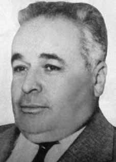

Otávio
Soares
Ferreira
da Cunha
CIRCUNSTÂNCIAS DA MORTE
Otávio Soares Ferreira da Cunha morreu em 4 de abril de 1964, após ele e seu filho Augusto sofrerem um atentado em 1º de abril de 1964. Augusto morreu imediatamente. Otávio, três dias depois. Seu outro filho, Wilson Soares da Cunha, ficou gravemente ferido na ocasião.
Suas mortes foram decorrentes da atuação de três fazendeiros – Wander Campos, Maurílio Avelino de Oliveira e Lindolfo Rodrigues Coelho –, cuja ação se dava em nome do Estado, especificamente a pedido do delegado-coronel Paulo Reis. Segundo um dos assassinos, Wander Campos, e de acordo com a versão oficial, Otávio e seu filho foram mortos em função de terem supostamente descumprido uma ordem de prisão determinada tanto pelo coronel da Polícia Militar, Pedro Ferreira dos Santos, quanto pelo delegado Paulo Reis.
Conforme a esposa de Wilson e Eunice Ferreira da Silva, empregada doméstica na residência da família, somadas as declarações dos próprios fazendeiros envolvidos, tomou-se conhecimento de que pai e filho se dirigiam à casa de Wilson. Maurílio Avelino de Oliveira, um antigo amigo da família, aproximou-se de um Jeep Land Rover, onde se encontravam Otávio, Augusto e Wilson. Logo depois, os fazendeiros retiraram a chave da ignição e começaram a atirar. Augusto morreu naquele instante. Otávio, já alvejado, ainda teve forças para sair do veículo, arrastando-se para tentar refúgio no interior da casa, quando foi perseguido por Lindolfo, que atirou em seu rosto. Foi levado ao hospital, mas não resistiu, morrendo três dias depois. Wilson, mesmo gravemente ferido, sobreviveu.
Os três fazendeiros envolvidos foram ao hospital em busca do outro filho de Otávio, o médico Milton Soares, que foi protegido por colegas médicos e enfermeiros.
Esclareceu-se, posteriormente, que o alvo principal da incursão do grupo de fazendeiros, a mando do aparato estatal, era Wilson, um dos apoiadores das atividades de Francisco Raimundo da Paixão, o Chicão (sapateiro e presidente do Sindicato dos Trabalhadores Rurais), defensor da reforma agrária, politicamente vinculado ao jornalista Carlos Olavo, que era reconhecido nacionalmente por defender as Reformas de Base e o governo João Goulart por meio do jornal O Combate, de Governador Valadares.
O corpo de Otávio Soares Ferreira da Cunha foi sepultado no cemitério de Governador Valadares (MG).
Otávio Soares Ferreira da Cunha died on April 4, 1964, after he and his son Augusto suffered an attack on April 1, 1964. Augusto died immediately. Otávio, three days later. His other son, Wilson Soares da Cunha, was seriously injured at the time.
Their deaths were due to the actions of three farmers – Wander Campos, Maurílio Avelino de Oliveira and Lindolfo Rodrigues Coelho –, whose action was in the name of the State, specifically at the request of delegate Colonel Paulo Reis. According to one of the killers, Wander Campos, and according to the official version, Otávio and his son were killed because they allegedly failed to comply with an arrest order determined by both the Military Police colonel, Pedro Ferreira dos Santos, and the police chief Paulo Reis.
According to Wilson's wife and Eunice Ferreira da Silva, a domestic worker at the family residence, together with statements from the farmers involved, it became known that father and son were heading to Wilson's house. Maurílio Avelino de Oliveira, an old family friend, approached a Jeep Land Rover, where Otávio, Augusto and Wilson were. Soon after, the farmers removed the key from the ignition and began shooting. Augusto died at that moment. Otávio, already shot, still had the strength to get out of the vehicle, dragging himself to try to find refuge inside the house, when he was chased by Lindolfo, who shot him in the face. He was taken to the hospital, but did not survive, dying three days later. Wilson, despite being seriously injured, survived.
The three farmers involved went to the hospital in search of Otávio's other son, doctor Milton Soares, who was protected by fellow doctors and nurses.
It was later clarified that the main target of the incursion by the group of farmers, at the behest of the state apparatus, was Wilson, one of the supporters of the activities of Francisco Raimundo da Paixão, Chicão (shoemaker and president of the Rural Workers Union), defender of agrarian reform, politically linked to journalist Carlos Olavo, who was nationally recognized for defending Basic Reforms and the João Goulart government through the newspaper O Combate, de Governador. Valadares.
The body of Otávio Soares Ferreira da Cunha was buried in the cemetery of Governador Valadares (MG).
Otávio Soares Ferreira da Cunha murió el 4 de abril de 1964, luego de que él y su hijo Augusto sufrieran un atentado el 1 de abril de 1964. Augusto murió inmediatamente. Otávio, tres días después. Su otro hijo, Wilson Soares da Cunha, resultó gravemente herido en ese momento.
Sus muertes se debieron a la actuación de tres agricultores – Wander Campos, Maurílio Avelino de Oliveira y Lindolfo Rodrigues Coelho –, cuya actuación fue en nombre del Estado, específicamente a petición del delegado coronel Paulo Reis. Según uno de los asesinos, Wander Campos, y según la versión oficial, Otávio y su hijo fueron asesinados porque presuntamente incumplieron una orden de detención determinada tanto por el coronel de la Policía Militar, Pedro Ferreira dos Santos, como por el jefe policial Paulo Reis.
Según la esposa de Wilson y Eunice Ferreira da Silva, empleada doméstica de la residencia familiar, junto con declaraciones de los agricultores involucrados, se supo que padre e hijo se dirigían a la casa de Wilson. Maurílio Avelino de Oliveira, un viejo amigo de la familia, se acercó a un Jeep Land Rover, donde estaban Otávio, Augusto y Wilson. Poco después, los agricultores sacaron la llave del contacto y comenzaron a disparar. Augusto murió en ese momento. Otávio, ya baleado, todavía tenía fuerzas para salir del vehículo, arrastrándose para intentar refugiarse dentro de la casa, cuando fue perseguido por Lindolfo, quien le disparó en la cara. Fue llevado al hospital, pero no sobrevivió y murió tres días después. Wilson, a pesar de estar gravemente herido, sobrevivió.
Los tres agricultores involucrados acudieron al hospital en busca del otro hijo de Otávio, el médico Milton Soares, que estaba protegido por compañeros médicos y enfermeras.
Posteriormente se aclaró que el principal objetivo de la incursión del grupo de agricultores, a instancias del aparato estatal, era Wilson, uno de los partidarios de las actividades de Francisco Raimundo da Paixão, Chicão (zapatero y presidente del Sindicato de Trabajadores Rurales), defensor de la reforma agraria, vinculado políticamente al periodista Carlos Olavo, reconocido a nivel nacional por defender las Reformas Básicas y el gobierno de João Goulart a través del periódico O Combate, de Governador. Valadares.
El cuerpo de Otávio Soares Ferreira da Cunha fue enterrado en el cementerio de Governador Valadares (MG).